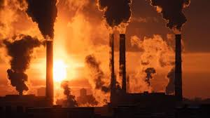

Poluição é uma degradação do ambiente que causa efeito nocivo ao meio ambiente e aos seres vivos que ali se desenvolvem. A poluição pode ser causada pelo humano, porém também devido a processos naturais.

Hídrica
As principais fontes de poluição dos oceanos são o petróleo, o plástico, os detritos e o esgoto urbanos, além dos dejetos provenientes das atividades econômicas realizadas em terra ou no mar.
Térmica
As principais fontes de poluição dos oceanos são o petróleo, o plástico, os detritos e o esgoto urbanos, além dos dejetos provenientes das atividades econômicas realizadas em terra ou no mar.


Radioativa
As principais fontes de poluição dos oceanos são o petróleo, o plástico, os detritos e o esgoto urbanos, além dos dejetos provenientes das atividades econômicas realizadas em terra ou no mar.

Atmosférica
As principais fontes de poluição dos oceanos são o petróleo, o plástico, os detritos e o esgoto urbanos, além dos dejetos provenientes das atividades econômicas realizadas em terra ou no mar.
